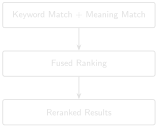
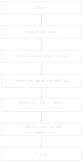

# code/chapter_09/hybrid_search.py
from collections import defaultdict
def reciprocal_rank_fusion(ranked_lists: list[list[str]], k: int = 20,
weights: list[float] | None = None) -> list[tuple[str, float]]:
weights = weights or [1.0] * len(ranked_lists)
scores: dict[str, float] = defaultdict(float)
for ranked_list, weight in zip(ranked_lists, weights):
for rank, doc_id in enumerate(ranked_list, start=1):
scores[doc_id] += weight * (1.0 / (k + rank))
return sorted(scores.items(), key=lambda item: item[1], reverse=True)9 Hybrid Retrieval and Reranking

Progress █████████░░░░ 9 / 13 · Estimated time: 60–75 min · Difficulty: 🔴 Advanced
9.1 Learning objectives
By the end of this chapter, you will be able to:
- Explain why semantic search alone underperforms on precise, entity- or number-heavy queries.
- Combine BM25 (sparse/exact) and dense (semantic) retrieval using Reciprocal Rank Fusion (RRF).
- Explain when and why production systems add cross-encoder reranking on top of fused retrieval, and the latency cost it trades for precision.
- Read production retrieval-scoring code closely enough to explain why a specific formula is written the way it is, not just what it computes.
9.2 Operational Problem
Mike, the completions engineer, is back with the packers question from Chapter 8: which report had packers fail to set — and why doesn’t either search method alone find it reliably? A query like “which report had packers fail to set?” has both a semantic component (packers, setting, failure — a topic) and effectively an exact-match component (you want report #49 specifically, not every report that mentions packers in passing). Dense embeddings capture the topical meaning well but blur precise distinctions; keyword search (Chapter 3) nails the exact terms but misses paraphrase entirely. Neither alone is enough — production retrieval systems combine both.
9.3 Theory
TipEngineering Translation: Hybrid retrieval
Hybrid retrieval just means running more than one search method on the same query and combining their results, instead of betting everything on a single technique. Here, that’s BM25 (below — an exact-match method, Chapter 3’s keyword search made more careful) plus dense embeddings (Chapter 4’s semantic search): two different ways of finding relevant reports, fused into one ranking.
BM25 (Robertson and Zaragoza 2009) scores a document by term frequency, adjusted by how rare each term is across the whole archive (inverse document frequency, IDF) and normalised for document length. It’s decades old, computationally cheap, and excellent at exact and near-exact matches — the opposite profile from dense embeddings.
TipEngineering Translation: BM25
BM25 is keyword search’s more careful cousin. It still matches exact words, like Chapter 3’s search, but gives more credit for rare, specific terms (“packers”) than common ones (“the”), and adjusts for how long each report is so a longer report doesn’t win just by containing more words overall.
Reciprocal Rank Fusion (RRF) combines two ranked lists by rank, not raw score: for each document, sum weight / (k + rank) across both lists. This sidesteps a real problem — BM25 scores and cosine similarities live on completely different, incomparable scales, so averaging raw scores directly would let whichever signal happens to have larger numbers dominate regardless of which is actually more informative.
TipEngineering Translation: Reciprocal Rank Fusion
Think of two judges ranking the same horse race. One scores out of 10, the other out of 100 — their raw scores can’t be averaged meaningfully. But their placings (1st, 2nd, 3rd…) mean the same thing regardless of scale. RRF combines two search results the same way: by where each report placed in each ranking, not by the raw number each method happened to produce.

Cross-encoder reranking is the last, most expensive step, and deliberately runs on only the top handful of fused candidates, not the whole archive. Unlike a dense embedding (which encodes the query and each document separately, then compares vectors), a cross-encoder scores the query and a candidate passage together, letting it capture interactions between them that no fixed vector representation can. This makes it substantially slower per comparison — which is exactly why it’s applied after fusion has already narrowed the field, not instead of it.
TipEngineering Translation: Cross-encoder
A dense embedding is like summarizing the query and each report separately, then comparing the two summaries from a distance. A cross-encoder instead reads the query and one candidate passage side by side, together, and judges the pair directly — closer to how a person actually double-checks a match, but too slow to do for every report, which is why it only runs on the small shortlist fusion already produced.
9.4 Reading the real fusion code
The companion pipeline’s src/rag_pdf/retrieval/hybrid_utils.py and src/rag_pdf/services/search_service.py implement exactly this pipeline. Two details in the real code are worth understanding closely, because they’re the kind of thing that looks like a stylistic choice until you see what breaks without it.
TipDetail 1: the IDF formula’s shape isn’t arbitrary
In plain terms: this line makes sure a very common word can never make a report’s score go negative. Here’s the code:
self.idf[term] = math.log(1.0 + ((self.n_docs - df + 0.5) / (df + 0.5)))Compare this to the classic Robertson–Spärck Jones IDF, log((N - df + 0.5) / (df + 0.5)) without the 1.0 +. For a term that appears in almost every document (df close to n_docs), the classic formula’s ratio drops below 1 and the log goes negative — which then corrupts any downstream sum that assumes term contributions are non-negative. Wrapping the ratio as 1.0 + ratio before taking the log guarantees the result stays non-negative for every possible df, because 1.0 + ratio can never fall below 1. This single design choice removes an entire category of edge case, permanently, for a cost of one added constant.
TipDetail 2: normalization has to define its own tie-break
In plain terms: this guards against a division that would otherwise break the whole calculation whenever every candidate ties. Here’s the code:
if hi <= lo:
return {i: 0.0 for i in candidates}Min-max normalization rescales scores into [0, 1] by subtracting the minimum and dividing by the range. If every candidate in a batch scores identically, hi - lo is zero — a division that, left unguarded, would raise an error or produce NaN (a special “not a number” placeholder floating-point math uses for undefined results like 0/0). The guard above catches that case explicitly and returns a neutral value (0.0 for everyone) instead, so a tie in this signal doesn’t crash the pipeline or corrupt the fused score — the other signal in the fusion is still free to discriminate between the tied candidates.
Neither of these edge cases shows up by running “more queries” against typical text — they only show up by reasoning about the math at its boundaries: what happens when a term is universal, what happens when every score ties. Retrieval scoring is numerical code, and it deserves the same edge-case discipline you’d apply to any other numerical code. The fusion weights themselves are also plain, readable constants in search_service.py: RRF_K = 20, RRF_DENSE_WEIGHT = 0.5, RRF_BM25_WEIGHT = 2.0 — the exact-match signal is weighted four times higher than the semantic one in this pipeline’s fused ranking, reflecting that for DDR text, exact-term matching often carries more precision than pure similarity.
9.5 Implementation
9.5.1 Step 1: fuse two ranked lists by rank, not raw score
What problem are we solving?
Combine two independently-ranked lists of reports — one from BM25, one from dense/semantic search — into a single fused ranking, without letting whichever method happens to produce larger raw numbers unfairly dominate the result.
Inputs
ranked_lists: two or more ranked lists of document IDs, best match first (e.g. one from Chapter 3’s keyword search, one from Chapter 4’s semantic search).k: a constant controlling how much rank position matters.weights: how much to trust each list relative to the others.
Expected Output
A single fused ranking: a list of (doc_id, score) pairs, sorted highest-scoring first.
What just happened?
For every report, this adds up a small credit from each ranked list based on where it placed — a high rank (near the top) contributes a bigger credit than a low rank, scaled by that list’s weight — then sorts every report by its total credit. Because this uses each list’s rank, not its own raw numbers, a method that happens to score everything on a bigger scale can’t unfairly take over the fused result. (The key=lambda item: item[1] on the sort line is just Python’s way of saying “order by the second thing in each pair” — here, the fused score rather than the report name.)
9.5.2 Step 2: turn that into a real hybrid search
reciprocal_rank_fusion fuses ranked lists — but it needs two of them to fuse. Chapter 4’s semantic search() already returns one. The missing piece is a ranked sparse signal: Chapter 3’s search() returns an unordered set — a report either contains every query word or it doesn’t — which RRF has nothing to order. code/chapter_09/sparse_ranking.py closes that gap with rank_bm25(), a BM25 ranking over the same archive (with a plain term-frequency fallback if rank-bm25 isn’t installed):
# code/chapter_09/sparse_ranking.py
from rank_bm25 import BM25Okapi
def rank_bm25(text_dir, query):
paths = sorted(text_dir.glob("*.txt"))
corpus = [tokenize(p.read_text(encoding="utf-8")) for p in paths]
scores = BM25Okapi(corpus).get_scores(tokenize(query))
ranked = sorted(zip(paths, scores), key=lambda ps: ps[1], reverse=True)
return [p.name for p, _ in ranked]With both ranked signals in hand, hybrid_search() in code/chapter_09/hybrid_search.py runs all three steps end to end: BM25 sparse ranking, Chapter 4’s dense ranking, fused with the weights above. That’s the function the practical exercise below calls.
One consistency note, tying back to Chapter 4: BM25 is a lexical method — it matches literal words, same as Chapter 3’s keyword search — so by that chapter’s Field Note it belongs on the expanded text, while the dense signal uses the raw. This exercise runs both over the same raw sample archive for simplicity, and for its queries that’s harmless — the report you’re checking for tops the BM25 ranking either way (report #49 for "packers fishing", report #38 for "stuck pipe"). Where it would matter is an abbreviation query like "bottom hole assembly": on expanded text BM25 surfaces report #38, which only ever writes BHA; on raw text it misses it entirely. A production pipeline points the sparse signal at the expanded text for exactly that reason.
9.6 Production Reality
This chapter tunes two signals with fixed weights (BM25 × 2.0, dense × 0.5) chosen for DDR text specifically. Real systems have to keep that tuning honest over time, not treat it as a one-time decision:
- these weights were tuned for this domain’s language — a different report type (well completions versus drilling, say, or a different operator’s writing style) may need genuinely different weights, not the same ones reused out of habit
- cross-encoder reranking adds real per-query latency, the same way an LLM call does (Chapter 5) — it has to be budgeted for, not just switched on and forgotten
- production systems often fuse more than two signals — metadata filters like well name, date range, or report type frequently join BM25 and dense scores in the same fusion step, and each added signal is one more way the weighting can go wrong
- as this chapter’s own Field Notes show below, adding a signal isn’t automatically an improvement — a production system needs ongoing evaluation (Chapter 11), not a one-time tuning pass assumed to hold forever
9.7 Practical exercise
🟢 Beginner
Try it yourself: Rank the ten sample DDRs for "packers fishing" two ways — rank_bm25() for the sparse signal, Chapter 4’s search() for the dense one — then fuse them with reciprocal_rank_fusion([sparse, dense], k=20, weights=[2.0, 0.5]), matching the companion pipeline’s real weighting. hybrid_search() does all three steps in one call if you’d rather run it end to end.
You’ll know it worked when: report #49 (packers) and #50 (fishing) both rank in the top two of the fused list, and you can explain why the weighting favours the keyword signal here.
9.8 Field notes
Warning🔧 Field notes: hybrid fusion isn’t automatically better — check both directions
Query: the same "stuck pipe" query from Chapters 3 and 4.
Result: with the pipeline’s real fusion weights (BM25 × 2.0, dense × 0.5), report #39 ranks 9th of 10 — worse than Chapter 4’s dense-only search, which ranked it 5th. Equal weighting (1.0 / 1.0) still only gets it to 7th.
BM25 alone: report #39 ranks 9th of 10
Dense alone: report #39 ranks 5th of 10 (Chapter 4)
RRF (2.0/0.5): report #39 ranks 9th of 10 (pipeline default weights)
RRF (1.0/1.0): report #39 ranks 7th of 10Compare that to "packers fishing" (the practical exercise above), where fusion helps exactly as expected — report #49 stays 1st and report #50 jumps from 8th (dense alone) to 2nd (fused).
You can reproduce every rank above with this book’s own code: rank_bm25() and hybrid_search() (from the implementation section) give report #39 exactly these positions over the sample archive — 9th on BM25 alone, 9th fused at 2.0/0.5, 7th at 1.0/1.0. The companion pipeline’s fuller BM25 implementation (DDR_UTAH_FORGE/src/rag_pdf/retrieval/hybrid_utils.py) lands on the same ordering for this query, which is a good sign the simplified version here captures what actually matters.
Why: BM25 has essentially nothing useful to say about report #39 for "stuck pipe" — it shares almost no vocabulary with the query, so BM25 ranks it 9th on its own. Fusing that weak, near-random signal in with a weight of 2.0 doesn’t cancel out — it actively drags a mediocre dense result down further. For "packers fishing", by contrast, both signals carry real information (the word “fishing” genuinely appears in report #50), so combining them helps.
Lesson: hybrid retrieval’s benefit depends on both signals being informative for the query at hand — not on combining more signals being unconditionally better. A sparse signal with nothing to contribute isn’t neutral when fused; it’s noise with a weight attached, and can make a weak dense ranking worse. This is exactly why Chapter 11 insists on per-category evaluation rather than one aggregate score — “hybrid beats dense on average” can still be actively wrong for a specific, operationally important query like this one.
9.9 Challenge exercise
🔴 Advanced
Challenge: Implement the two guards from the code study above against deliberately constructed edge cases: a term that appears in every sample document (test that your IDF stays non-negative), and a batch where every candidate scores identically (test that your normalization doesn’t divide by zero). Confirm an unguarded version fails first. A reference solution is in code/chapter_09/challenge/.
9.10 Key takeaways
- Sparse and dense retrieval fail on different, complementary query types — combine them rather than picking one.
- Rank-based fusion (RRF) avoids the scale-mismatch problem that plagues naive score-averaging across different retrieval methods.
- Cross-encoder reranking buys precision at a real latency cost — apply it only to a small, already-fused candidate set.
- Retrieval scoring is numerical code. Boundary conditions — universal terms, tied scores — deserve explicit guards, and reading why a formula is shaped the way it is tells you more than reading what it computes.
9.11 Repository files
| File | Purpose |
|---|---|
code/chapter_09/sparse_ranking.py |
Ranked BM25 sparse retriever — the ranked signal RRF fuses |
code/chapter_09/hybrid_search.py |
Reciprocal Rank Fusion, plus hybrid_search() end-to-end |
DDR_UTAH_FORGE/src/rag_pdf/retrieval/hybrid_utils.py |
BM25 index, IDF formula, score fusion (companion repo — requires DDR_UTAH_FORGE) |
DDR_UTAH_FORGE/src/rag_pdf/retrieval/canonical_hybrid.py |
Full hybrid retrieval pipeline (companion repo — requires DDR_UTAH_FORGE) |
DDR_UTAH_FORGE/src/rag_pdf/services/search_service.py |
Cross-encoder rerank + fusion weights (companion repo — requires DDR_UTAH_FORGE) |
CautionCHECKPOINT — Chapter 9
Tip✓ WHAT YOU BUILT
hybrid_search.py — a Reciprocal Rank Fusion engine combining keyword and semantic retrieval into one ranked list that plays to both methods’ strengths.
9.12 What can you do now that you couldn’t do before?
You can combine exact keyword matching and semantic search into a single ranked list that plays to each method’s strengths — and, from real evidence rather than assumption, you know that combining signals only helps when both of them actually have something useful to say about the query at hand.
9.13 Suggested next step
Coming up in Chapter 10: Better retrieval still isn’t the same as a trustworthy answer. Chapter 10 tackles the harder problem: making sure every generated claim traces back to real evidence, and that the system tells you honestly when it doesn’t know.